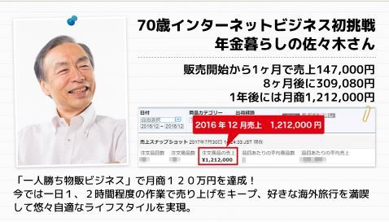
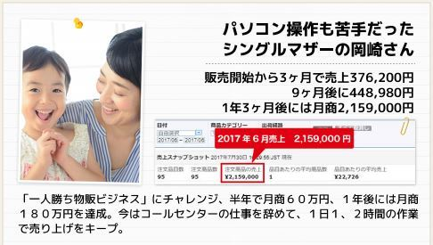
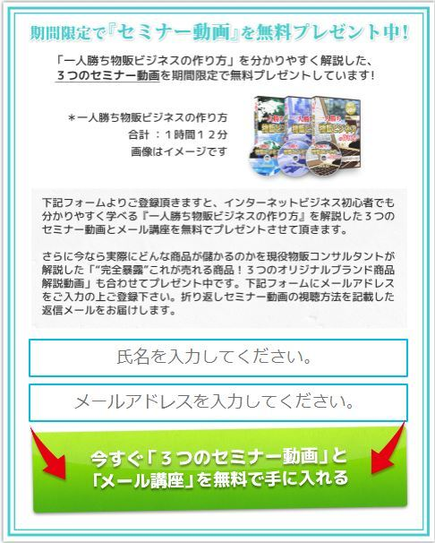

| 「低資金」、「短時間」、「経験ゼロ」から始められるライバル不在の「一人勝ち物販ビジネス」の作り方 | |
| 白石 圭 | |
| 自社 (2017) | |
「低資金」、「短時間」、「経験ゼロ」から始められる
ライバル不在の「一人勝ち物販ビジネス」の作り方
白石 圭
本作品は縦書きでレイアウトされています。
また、ご覧になるリーディングシステムにより、表示の差が認められることがあります。
この度は私の本をダウンロードして頂き有難うございます。私が現在進行形で稼いでる一人勝ち物販ビジネスのノウハウを心を込めて書いたので是非最後まで読んで頂けたら幸いです。
人生を少しでも変えたいと思っているあなたに、自分で人生をコントロールすることが出来る方法をお伝えしたいと思い、今回本を書かせていただきました。
もしあなたがこれからの考えをお持ちであれば、是非本書に書いた知識を身につけて頂き実践することで経済的自由とライフスタイルの自由の両方が手に入るようになります。
副業のインターネットビジネスには様々な稼ぎ方がありますが、その中でも初心者におすすめはせどり・転売などの「物販ビジネス」です。せどりや転売などの物販ビジネスが初心者におすすめなのは、スキルや知識の無い未経験からでも始めやすく、低資金、短時間でも成果が出やすいからです。
転売などの物販ビジネスはとてもシンプル。「安く仕入れて、高く売る」これだけです。
「儲かる商品を見つけ」「安く仕入れて」「高く売る」、シンプルにこれを繰り返すだけで、あとは作業量に応じて報酬が積み重なっていきます。高度なスキルや知識を必要なとせず、基本的な稼ぎ方を身に付ければ誰でも成果がでる稼ぎ方として、すでに多くの方が副業のインターネットビジネスとして取り組み始めています。
しかしそんな「せどり・転売」の現状は・・・・
下記は日本アフィリエイト協議会によるアンケート調査の結果です。月に３万円以上稼げている人は、２０１５年度はたったの４%。２０１３年度２．４％、２０１４年度は３．２％と右肩上がりに増えているとは言え、
多くの人が「ほとんど稼げていない」「稼げても３万円未満」そんな現状があることをお分かり頂けると思います。
せどりや転売などの物販ビジネスは稼ぎやすいと言われる一方で、なぜ多くの人が思うような成果を出すことができないのでしょうか？
理由は
「ライバルが多い」からです。
せどりや転売などの物販ビジネスは書籍や雑誌などでも、初心者向けの副業ビジネスとしてよく取り上げられるようになりました。そこで起きたのが「ライバルの増加」です。
そんな状況の中よくある転売ノウハウだけでは成果が出しにくくなっています。しっかりと時間を取って実践するならまだしも、副業の限られた時間での実践となるとライバルとの競争に勝てず思うような成果が出ないことがほとんどです。
ではどうすればいいのか？
答えはシンプルなのですが、初心者からでも、副業で限られた時間での実践でも「ライバル不在の稼ぎ方」なら競争に巻き込まれることなく、一人勝ちすることが出来ます。
この方法なら、
多くのライバルを尻目に初心者のあなたでもこのような未来を実現することができます。
これからあなたにお話する一人勝ち物販ビジネスは、 長く安定した収益を生みだす仕組み」を作る方法です。
この仕組みを作ることができるスキルは、 あなたの一生涯の財産となるはずです。
今からその理由と、どのように稼ぎだすのか、 具体的なビジネスモデルについてお話していきたいと思います。
ノウハウをお伝えする前に今回のビジネスを他の方に実践して頂き、人生を変えた二人の方をご紹介したいと思います。
「白石さんが成功したのは、色々なインターネットビジネス経験があったからでしょ？」「やっぱり初心者は同じようにいかないんでしょ？」そんな風に言われることがよくあります。もしかしたらあなたもそう思われたかもしれません。
そこでこれからご紹介する方は、どちらもインターネットビジネスは愚か、パソコンも少し触る程度の方達でした。そんなインターネット初心者、インターネットビジネス初心者でも、僕と同じように実践することで、短期間でこれだけの利益を生みだす仕組みを作りだしています。
７０歳インターネットビジネス初挑戦の佐々木さん
販売開始から１ヶ月で売上１４７，０００円、 ８ヶ月後に３０９，０８０円、１年後には月商１，２１２，０００円
パソコンはインターネットが少しできるぐらいのそんな状態からのスタートだったんですが、文房具のカテゴリーで２０１６年６月から販売スタート。
１ヵ月後の７月の売り上げが１４万で利益は４万程売り上げるようになりました。その後は４ヵ月目で２５万、８ヵ月目で３０万まで伸びました。
この方は今では毎月のように海外旅行に行ったり、趣味だったパチンコを毎日のように行けるようになったり、夢だった懐石料理付きの温泉を楽しむという生活も送れるようになったりと喜ばれています。

パソコン操作も苦手だった シングルマザーの岡崎さん
販売開始から３ヶ月で売上３７６，２００円、 ９ヶ月後に４４８，９８０円、１年３ヶ月後には月商２，１５９，０００円
シングルマザーでバイト以外に収入が欲しいがあまり取り組む時間がない状態からのスタートだったんですが、服＆ファションのカテゴリーで２０１６年３月から売り始めて、３ヵ月後には１商品で３７万程売り上げる成果を出されています。
その後も、９ヵ月で４４万円、今年の７月には１商品で７５万を売り上げるまでに成長しました。
今では仕事を辞めて、ご自身のオリジナルブランド商品を販売するこのビジネス１本で、在宅で仕事をやりながら育児や家事をされているということでした。

今回ご紹介させて頂いた方以外にも、現在進行形で学生で学校に行きながら実践されている方や、海外在住で実践されている方など、 様々な環境の中でみなさん一人勝ち物販ビジネスに取り組まれていますが、みなさんしっかりと成果を出されています。

自分独自の付加価値を付けたオリジナルブランド商品を販売することで高利益且つライバル不在で安定的に収益を上げてくれることが特徴のビジネスとなってます。簡単に言ってしまうと、ライバルのいない自分だけのオリジナルブランド商品を作って、自分の決めた値段で販売し、しっかりと利益を取って稼いでいきましょう、というビジネスのことになります。
オリジナルブランド商品は、商品を作る際に一度商品リサーチを終わらせれば、後はリピート仕入れになるので毎日商品リサーチをする必要ががなくなります。ライバルがいないので価格競争になりませんし、自分で販売価格を決めることが出来るので高い利益を手元に残すことができます。
転売だと、・ある日メーカーから規制が入って商品が販売出来なくなったり、ライバルからの嫌がらせでアカウントの閉鎖になったり、などのトラブルとも無縁になりますのでストレスフリーでビジネスできるようになります。
まずオリジナルブランド販売では販売する商品をどこで作ればいいのか？というと中国が最もポピューラーになります。貿易のデータを見ると日本が輸入している国で取引量が一番多い国が一番は現在中国になっていて身の回りのある商品でも製造国を見て頂くと中国をよく見ると思います。今更中国って思う方もいるかもしれません。
しかし実際私自身タイや他の中国より人件費が安い国で商品を製造したことあるんですけれども商品の品質の問題であったりインフラが安定していないので、品質が悪い商品が届いたり納期が予定より伸びたりでトラブルが多いです。
品質・納期・商品の品ぞろえが安定しているのは中国が一番です。商品単価の面でも人件費が日本の約４分の１ぐらいなので非常に安いです。
現在インターネットの物販ビジネスでは様々な販売先があります。ヤフーショッピングやバイマ、楽天、メルカリなど沢山あって、それぞれに稼ぎやすいなんて耳にすると思います。
そんな中、一人勝ち物販ビジネスで最もおススメするのがＡｍａｚｏｎになります。
なぜ僕はこのＡｍａｚｏｎでの販売をすすめるのか、理由は沢山あるのですが、ここでは４つほどお話しておきます。
１つ目の理由
毎年急成長しているプラットフォームの内の一つ
まず１つは、とにかく毎年右肩上がりに成長しているプラットフォームだからです。
あなたもそうだと思いますし、この電子書籍をご覧の殆どの方が、Ａｍａｚｏｎで買い物をしたことがあると思います。成長率が凄く、今後もさらなる拡大を期待できるＡｍａｚｏｎ、このプラットフォームを活用した稼ぎ方だからです。
２つ目の理由
Ａｍａｚｏｎの圧倒的な集客力（国内一のアクセス数）
Ａｍａｚｏｎの集客力がどのぐらいあるかというと日本では楽天やヤフーショッピングのアクセス数を抜いて国内一番の通販サイトなんです。
１ヵ月のアクセス数は約６億ＰＶというデータがあります。
こうした圧倒的な集客力があるからこそ、初心者でも着実に販売していくことができるわけです。
３つ目の理由
商品ページの作成が簡単
楽天やヤフーショッピングの販売ページをご存知ですか？あんな感じの縦長の商品ページを作る必要がなく、
そのぐらいを用意するだけで大丈夫です。
Ａｍａｚｏｎの商品ページは楽天やヤフーショッピングに比べて自由度が低いわけですが、その分初心者でも簡単に作れるようになっています。
４つ目の理由
自動化をしやすいサービスが整っている点です。
ＡｍａｚｏｎにはＦＢＡという、商品の保管、配送、入金確認、返品処理全てを代行してくれる仕組みがあります。
これを使うことで固定費がかかるとかそんなこともないわけです。自分で倉庫借り、配送の仕組みを作ることも出来るわけですが、お金も労力もかかります。人を雇うなどの面倒も出てきます。
ＡｍａｚｏｎのＦＢＡを利用すれば雑務の全てを代行してくれます。
他にも理由はありますが初心者が始めるには、固定費もかけることなく経済的自由とライフスタイルの自由どちらも手に入るという至れり尽くせりのサービスがＡｍａｚｏｎにはあるのでお勧めしています。
第２章で商品を作る国でおススメは中国とお伝えしました。
けれど中国で商品作ることに
様々な不安が頭に思い浮かぶと思うですけど
こういった不安を全て解決してくれるのが、パートナーという存在になります。
このパートナーとはどういった方を指すのかというと日本語と中国語の２ヵ国語を話すことが出来る中国在住の中国人の方を指します。
この現地パートナーを活用するには、固定給いるの？とか勤務管理をしないといけないのか？だったりといった疑問が頭に思い浮かぶと思うですけど従業員という立ち位置ではなくて完全成果報酬型の外注というイメージです。なので商品を仕入れるまでお金は一切払う必要がないので、固定費がかかるとか先にお金を払うといったことは一切ありません。
それでは日本語を話せる中国在住の中国人のパートナー構築のメリットは何かというと大きく分けて３つあって
１つは知識です、
私たちは中国語を話すことが出来ないので言語の問題をパートナー構築をすることによってすぐにクリアすること出来ます。応募してくる中国人の方が片言じゃないの？とか通じるのかななどの不安があると思うんですけれども日本語がペラペラに近い方が多くて本当に日本人の方と話してるのと勘違いするぐらいの方が多いです
２つ目は時間です。
中国語、貿易を学ぶ時間を削減することが出来き、且つ貿易のプロの方に任せるのでトラブルも未然に防ぐことが出来ます。私たちが休んでいる時でも商品の検品や工場の進捗上を管理してくれることによって副業に割く時間があまりなくてもしっかりビジネスが回ります。
３つ目はお金です。
スタートアップの時は固定費は出来る限りかからないようにしたいので今回お伝えしたパートナー構築をすることによって従業員を雇う必要もなくなくなってきます。
知識と時間とお金この３つのメリットが手に入るのに多くの人が
とこういった悩みで多くの人がこのパートナー構築をやっていないので本当に今パートナー構築をしておくことがチャンスでありリスクゼロでビジネスを本当に円滑に進めることが出来ます。
私が教えてきたコンサル生の方は掲示板に今回お配りするマニュアル書の募集分を貼り付けた所貼り付けた当日に応募が来たのでパートナー構築が出来ないということがありえません。
是非今回無料でお配りするマニュアル書を元に一度行動して頂けたらと思います。
ビジネスの売り上げの公式ですが集客力と商品力とセールス力で売り上げが決まります。集客力はＡｍａｚｏｎが集客してくれるので最初はあまり力を入れなくていいのですが、それでは一人勝ち物販ビジネスではどこに力を入れるかというとまずは商品力になってきます。
一人勝ち物販ビジネスにおける商品力で重要になってくるのは既に需要のある商品の類似品を扱うことが重要になってきます。
なぜかというと需要が既にあるといういうことは、商品が売れないということはまずないので最短・最速で利益を上げることが可能になってきます。
ではどのように商品リサーチを進めていくのか？というと勿論ステップ１で見つけて頂いたパートナーと協力して商品リサーチを進めていくことになります。
商品リサーチを分担制にすることで私たちは言語の問題や現地に言って交渉する必要などがなくなってきます。
私たちは日本市場でこれから説明するリサーチ方法、最も需要が分かるランキングリサーチで売れている商品つまり需要がある商品を探します。
そしてリサーチした需要がある商品のデータをパートナーに渡し、作れる工場をリサーチして頂き見つかり次第最小ロット、納期、単価の交渉を進めてもらいます。
それでは現在売れている商品をどのように見つけるのか？というと色んなリサーチ方法があるんですけれども
例えば
他には
で今回は需要が一目でわかるＡｍａｚｏｎの売れ筋の商品ランキングを元にリサーチしていく方法を説明したいと思います。
ではここからは実際にどういったＳＴＥＰでランキング情報から売れている商品を見つけていくのかを説明していきます。
今回はＡｍａｚｏｎで解説していきます。
まずＳＴＥＰ１はＡｍａｚｏｎのトップページにアクセスします。
↓
ＳＴＥＰ２で検索窓には何も入力しないでカテゴリーを選択してここでリサーチしたいジャンルを選択します。カテゴリーが選択し終わったら虫眼鏡をクリックします。
↓
そうすると選択したジャンルの商品が沢山出てくるんですけれどもＳＴＥＰ３でその中に赤枠のＡｍａｚｏｎランキングという項目があるのでこれをクリックすることで
↓
自分が選択したジャンルの商品カテゴリーの総合ランキング１～１００位まで表示されるようになります。
ＳＴＥＰ４でその画面の左のサブカテゴリーを選択することで、そのカテゴリーのより詳細なランキングが分かります。
このようにして日本市場で需要がある商品をリサーチしていきます。
販売面はＡｍａｚｏｎのＦＢＡというサービスを利用します。
それではＡｍａｚｏｎのＦＢＡはどういったサービスかというと
商品の保管・注文の受付・決済管理・梱包、発送・返品処理・売上入金この通販の販売面の一連の流れを全てＡｍａｚｏｎのＦＢＡが自動してくれます。
この仕組みがあることで売り上げが１００万、２００万、３００万と伸びても時間に余裕が出来るけれども収入がどんどん伸びていく状態が可能になります。
自分が海外旅行に行った時でも勿論お金は入ってきますし、病気になって働くことが一時的に出来なくても勿論お金は入ってきます。
一人勝ち物販ビジネスではどのように自分が働かなくてもお金が入ってくる仕組みを作るかというと、ＳＴＥＰ１で説明した現地パートナーとＡｍａｚｏｎのＦＢＡを組み合わることで自動化していきます。
収益が出る一連の流れがこのようになっているんですけれども仕入れ面はパートナーを活用して商品選定、商品の製造、検品、発送の仕組みを作り販売面はＡｍａｚｏｎのＦＢＡを活用して商品の保管・発送、売上入金、梱包・発送の仕組みを作ることで自分が働かなくても毎月安定的に収益が発生するようになります。
この二つを組み合わせことで転売やその他の副業では得ることが出来ない経済的自由とライフスタイル自由、どちらも手に入れることが出来るようになります。
経済的自由というのは転売とかのような自分が毎日リサーチしないと収入が出ない労働収益ではなくて最終的には自分は何も働かなくても安定的に１０万、３０万、５０万と継続収入が入ってくること状態のことです。
ライフスタイルの自由というのは働く場所の自由であったりこの時間に、働かないといけないと時間的拘束もない状態のことです。
一人勝ち物販ビジネスは、正しいノウハウを実践すれば必ず結果が出るビジネスです。私はこのビジネスモデルを完成させるまでに数千万単位で失敗し苦労してきました。
かつての僕と同じように経済的自由とライフスタイルの自由を手に入れたいという人に、少しでもスムーズに結果が出せるようにと願いを込めたのが本書です。
本書だけでは説明しきれなかったノウハウや最新情報などを無料のメルマガにて公開しています。こちらも併せて読んで頂けたら幸いです。